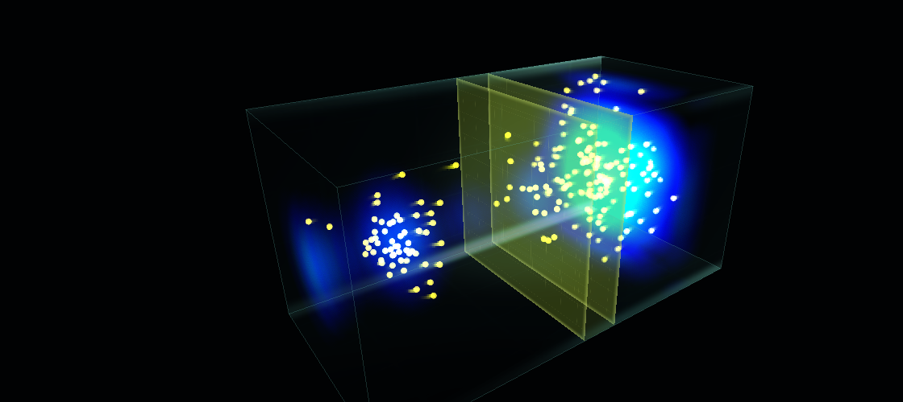

Educational notebook
Klein Tunneling
Relativistic Dirac wave packets at supercritical potential barriers in 2D and 3D.

Klein Tunneling
A positive-energy Gaussian packet starts on the left and meets a vertical potential barrier. We start in 2D for simplicity and clarity.
You can adjust the potential strength. For lowest values the packet has enough kinetic energy to at least partially cross the barrier. In this case part of the wave and a portion of the particles will be transmitter, while the rest will be reflected.
The intermediate potential values are indicated by red color. For these a classical particle would not have enough energy to ever cross the barrier. But as you may know from basic quantum mechanics, there is still a small chance that an evanescent wave, and a bohmian particle with it, can pass through a thin enough wall.
But now comes the surprise. What if we continue to increase the potential strenght? Even for a quantum wave, it would become ever more impossible to cross the barrier, right?
Schrödinger woud say yes, but Dirac says no. (It was Oskar Klein who found this result in 1929.) It turns out that for a potential strenght larger than the rest energy of the particle, the barrier can support negative-energy modes. It is of course a bit unclear what do "negavive-energy modes" mean, but at least from Bohmian perspective, probability current is probability current, and the particle can be guided through the barrier.
Counterintuitively, by increasing the potential the wall becomes more transparent to the Dirac particle.
This should be entirely counterintuitive! by raising the wall, or potential, it should not become easier to cross it, right? But apparently it does. The classic interpretation is that the negative-energy modes are actually "holes" in the Dirac sea, and they can be interpreted as anti-particles. The modern quantum field interpretation is that the Dirac equation is a single-particle limit of a quantum field theory, and the negative-energy modes are actually the creation of particle-antiparticle pairs.
Anyway, it is an interesting effect with profound implications for relativistic quantum mechanics.
3D Klein Tunneling
The 3D version uses a four-component Dirac spinor in a tunnel. The boundary conditions are periodic for simplicity.
(Note: The 3D simulation takes time to load and uses more computational resources than the 2D version.)
Klein paradox, or tunneling, in 3D.
Explanation
The particle follows the Dirac current
Pilot-wave theory gives a concrete dynamical picture of Klein tunneling. The relativistic Dirac equation allows for a nonzero current through the barrier region. As ever, the velocity of a bohmian particle is determined by the current of the full Dirac spinor. Particles simply "sail through" the barrier with the probability flow.
Why the barrier can become transmitting again
In the nonrelativistic Schrödinger picture, the relevant energy-momentum relation is:
When the potential barrier high enough to \(E-V_0\) become negative, the momentum \(p\) becomes imaginary. Classically this means the particle cannot cross the barrier. Quantum mechanically, even in the Schrödinger picture, the wave function still supports an evanescent wave, which decays exponentially inside the barrier region. There is some possibility of tunneling through but tunneling becomes ever smaller as the barrier potential increases.
The Dirac equation, on the contrary, is relativistic so the corresponding energy-momentum relation is:
When the barrier potential is so high that \( E - V_0 < -mc^2. \) the momentum \( p \) becomes real again! Such a supercritical barrier supports a propagating negative-energy branch.
Counterintuitively, the barrier can become transmitting again, even though it is higher than before. Moreover, the higher the barrier, the more negative-energy modes are supported, and the more transmitting channels are available. An infinitely high barrier would be transparent to the Dirac packet.
Bohmian insights
The Bohmian trajectory is not determined by the classical force. The particle responds to the whole spinor velocity field \( \mathbf{j}/\rho \). Even negative energy modes can contribute to the guidance, so increasing the positive potential does not have to monotonically reduce the forward velocity.
The useful intuition is that the high barrier reorganizes the spinor flow field. After the supercritical channel opens, the Bohmian particles follow that reorganized current.
What this explains and doesn't explain
The deep reason the channel exists is still the relativistic Dirac spectrum. Pilot-wave theory then says what an actual particle does in the resulting spinor flow.
For the full Klein paradox, where pair creation is physically important, a one-particle Bohm-Dirac model is not the final story. A Bohmian quantum field theory with variable particle number would be needed to make the pair-production account literal.
Theory & Equations
Dirac evolution
The relativistic wave packet evolves under the Dirac equation with a scalar potential barrier \(V(\mathbf{x})\). The Dirac equation can be written in a non-covariant form similar to that of the Schrödinger equation:
Here \(\psi(\mathbf{x},t)\) is the Dirac spinor, while \(\boldsymbol{\alpha}=(\alpha_x,\alpha_y,\alpha_z)\) and \(\beta\) are the Dirac matrices. In the standard Dirac representation,
Klein zone
The supercritical regime begins when the barrier height is larger than the incident total energy plus one rest energy.
Bohmian guidance
The particle positions are guided by the Dirac current of the full spinor.